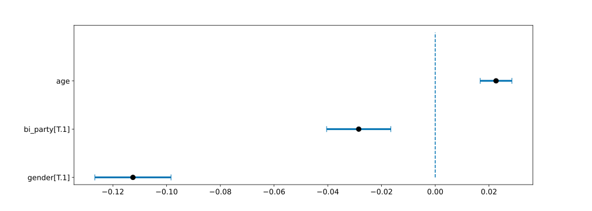

Some people easily complain about the "decline of language", about a decrease in the quality of style in the media. Certainly, the digital change is also accompanied by a fundamental revolution in the use of media at the expense of professional news media. This is accompanied by a growing preference for audiovisual platforms. Videos are rewarded with particular response rates and are favored by the algorithms of technology intermediaries. The media have a large responsibility in the evolution of language since written and spoken media (TV and radio) produce a lot of language material. The goal of this project is to successfully classify quotes from American newspapers to determine their style. The database on which this analysis was conducted contains quotes from American politicians from 2015 to 2020 in news articles. An analysis of the evolution of informal language use is difficult in such a short time step. However, if the method shows a good classification potential, then the analysis could be conducted on a larger dataset. In addition to the temporal evolution, the identification of categories of politicians (age, gender, political affiliation) using informal language more frequently may also be useful to better characterize the phenomenon.
Quotebank is the main data source for this project. It is derived from the work of the ... of EPFL in collaboration with Stanford University. Quotebank is an open corpus of 178 million quotations attributed to the speakers who uttered them. The data has been extracted from 162 million English-language news articles published between 2008 and 2020. To obtain a corpus of that scale the team of the DLAB developed a minimally supervised framework for extracting and attributing quotations from massive corpora with a BERT-based model. The full dataset is publicly available on Zenodo and a more detailed description of the methods used for quote extraction can be found in the paper of the research team of the EPFL laboratory (T. Vaucher, A. Spitz, M. Catasta, R. West 2021). This database will be used to extract quotes and analyze the linguistic quality of the different speakers, which makes it an interesting source of data to answer the use of language in the news articles.
Quotbank outputs are given with a prediction on one or many candidate speakers. Overall, Quobert correctly attributes 86.9% of quotations in our experiments but sometimes the outcome is quite uncertain. The data output by the quotebank algorithm is of the following form:
| Quote | Probability 1 | Probability 2 | Probability 3 |
|---|---|---|---|
| "Sorry losers and haters, but my IQ is one of the highest - and you all know it! Please don't feel so stupid or insecure, it's not your fault." | D. Trump 80% | M. Barnes 18% | E. Malcolm 2% |
Data wrangling is therefore necessary. The idea is not to keep all the quotes for the sake of uncertainty. The following deletion criteria have been applied:
After this data wrangling, the repartition of probabilities is represented yearwise as a sanity check (note that the difference is very small, but still visible):
Here, we speak about descriptive metadata which is the descriptive information about the quotes. In order to better characterize where the news articles come from, it is useful to obtain the source of the quote. To do this, the web domains of all entry URLs have been extracted and grouped into a domain data frame. The query goes through a WHOIS server directly instead of going through an intermediate web which increases the efficiency of the retrieval.
To trace the source of the quotation, one useful indicator could be the organisation registered for the quote’s URL. We thus performed WHOIS requests on quotation web domains and tried to retrieve information for the fields "organization, country, state, city".
We found out that about a third of the quotes appeared in articles whose URLs are detained by ten organisations.
It can be seen that a large share of the names appearing in the top ten organizations are services aimed at preserving the anonymity of the companies publishing the citations. It therefore seems inappropriate to use such a source of information.
Geographical indicators can also be used to find the origin of citations. We have tried to find information on the country, state and city of registration of URLs.
It is easy to see that the United States is the most represented country. Moreover, all of the nine most recurrent states are U.S. states. This suggests that focusing on the United States might be a good solution to frame our field of application without running out of data.
Another important piece of information in the analysis process is to know a little more about the speakers. For this, Wikidata is a very interesting data source. As American politicians usually have a Wikipedia page, information about their age, political orientation, and gender can be easily retrieved automatically using a provided parquet file.
To check the data representativity, the metadata from speakers is used to explore the different main features of speakers. Taking a random sample of 1 million quotes, the following repartitions can be drawn:
American nationality and the profession of 'politician' seem to be predominant. Moreover, one might think that the use of informal language is less present in the political world than elsewhere. It would therefore be interesting to look more closely at this category of speakers in order to verify the preconceived notions of this statement.
Thus, the decision was made to focus on American politicians in order to clarify the research field. Quotes from this category of the population will be used to analyze the results of the informal/formal classification techniques.
Now that we have a solid, clean, and consistent database, with additional valuable information about it, let's tackle the difficult question:
What is the difference between formal and informal language?
Formal and informal language serve different purposes in written communications. The tone, the choice of words, and the way the words are put together vary between the two different styles. Globally we can observe the following key facts:
These statements are quite general and define the difference between the two styles. However, implementing an algorithm from these elements seems to be a difficult task. More precise markers must be defined to facilitate the automatic processing of the quotes to be classified. To characterize the style of the language, it is important to focus on precise markers, easier to identify in natural language. The following points are commonly accepted as best characterizing informal style:
Often, slang terms are considered vulgar or offensive to use in polite conversation. Its use implies that the user is familiar with whatever is referred to, or with a group of people who are familiar with it and use the term. It often replaces a well-known conventional synonym.
A contraction is a shortened form of a word (or group of words) that omits certain letters or sounds. They are common in speech and informal writing, but tend to be avoided in more formal speeches.
The combination of two or three words from different grammatical categories. Although phrasal verbs are acceptable in spoken English, they are frequently considered too informal for academic writing.
Personal pronouns that refer to the author or authors (I, we, my, etc.) The norm in the academic field tends to banish it to maintain an objective, impersonal tone and keep the focus on the material rather than the author. When it comes to giving your opinion, as in politics, the impersonal tone is to keep the focus on the material rather than the author. For this reason, this criterion will not be used for the analysis of quotes from American politics.
A study (F. Sheikha and D. Inkpen 2012) conducted on a similar topic to the one discussed was a major influence on this work. The authors describe precisely how they classify different texts between formal and informal language. The results obtained by this team seem to corroborate the criteria taken into account in this work.
To detect slang words, you just have to take a set of quotes, list them and test each quote. If the word is present in the quote, it is tagged as informal. To do this, the formal word dictionary was imported from the Urban dictionary. Urban Dictionary is a dictionary of slang or cultural words and phrases, not typically found in standard dictionaries. About 20’000 words have been analyzed and the most commonly detected ones removed from the list to avoid a too high false-positive rate. The biggest problem with this method is that it is too arbitrary. The words taken into account indeed come from Urban dictionary, known as the reference for slang words, but (as explained above) a threshold must be introduced to avoid including words that are too frequent. The choice was to keep only the words of the dictionary that appear in less than 0.1% of the quotes. Some words from the urban dictionary are widely used nowadays even with this low threshold which makes the classification not very robust.
| Word | Occurence |
|---|---|
| Reject | 0.960 ‰ |
| Busy | 0.927 ‰ |
| Holes | 0.921 ‰ |
| Nose | 0.921 ‰ |
| Village | 0.920 ‰ |
We see that some quotes using these words could be considered as being formal. The limitation comes from the fact that the dictionary proposed by urban dictionary does not have strict criteria, and the words, depending on their use, can be quite formal in their context. Also note that urban dictionary is a collaborative project, users can propose their contribution to the image of wikipedia article.
It's easy to see that it's not going to work well, for example
As said in the theory, contractions are perfectly standard, but they’re usually considered to be relatively casual. To account for that, a list of banned contractions that should be avoided when writing a Wikipedia page is available. This dataset is illustrative, but non-exhaustive list of contractions discriminating informal language. Once the corpus of contractions is created, it is possible to check whether each quote contains at least one of the contractions. Most recurrent contractions are removed from the discriminative corpus in a similar way as in the slang detection method (using a threshold of 2%).
Tokenization has not been performed on the quotes as it did not apply well to contractions since they are usually made of more than one tokens. As an example, the contraction “can’t” consists of tokens “can” and “n’t” but the presence of these tokens in a quote does not ensure that the word “can’t” is present.
To qualify the performance of the classification, it is necessary to compare it with ground-truth. The problem is that there is no clear criterion to characterize whether a quote is formal or informal. The subjectivity of the qualifier "informal" makes the task of setting labels difficult. Crowdsourcing has a lot of potential for such a task, because if enough people give their opinion then we will get closer to ground-truth. However, this method was not chosen due to a lack of time and resources, then a pseudo-crowdsourcing within the group was carried out. In total, four hundred randomly selected quotes have been labeled by the 4 members of the research group.
The following results can be observed for the classification according to contractions:
To fully understand how the model performs, we need accuracy metrics
| Producer's accuracy | User's accuracy | Overall accuracy | ||
|---|---|---|---|---|
| Formal | 95.28% | Formal | 60.30% | 64.25% |
| Colloquial | 29.26% | Colloquial | 84.62% | |
First of all, less than 65% of the quotes are classified in the correct class as we are told by the Overall accuracy. This is probably better than random label attribution as we would get an Overall accuracy of close to 50%. However, this tells us that the model is not suited to assess the colloquial language question. To understand what does and does not work, let’s take a look at the other computed accuracies.
The Producer’s accuracies show that real formal quotations are usually labeled correctly (in 95.28% of the cases), while real colloquial ones are often mistaken by the model for formal quotes.
Here is an example of an informal quote mistaken for a formal one because of the absence of contractions:
Enough. Enough. Call Loretta Lynch for a vote. Get her confirmed. Put her in place. Let her do her job.
This is embarrassing, a process like that.
Barack Obama
On the other hand, the User’s accuracies show that only about 60% of the formal predictions are actually formal quotes, but predictions stating that a quote is colloquial are usually right (in 84.62% of the cases), such as in this example :
I'd like to think that I've been pretty aware of the unique challenges women face -- it's what has shaped my own feminism.
Barack Obama
(the contraction that has been captured are indicated in bold, note that “it’s” is not captured as it was removed from the corpus because of its occurrence fraction that was larger than 2%)
The errors produced by the methods have a rather simple explanation :
Contractions are only one of the characteristics of informal language. Note here that it seems to be a valid characteristic as colloquial predictions are usually true (User’s accuracy - colloquial). However, the method lacks information to fully apprehend the concept of colloquial language. The quotes that have been wrongly predicted as formal probably had other colloquial aspects such as phrasal verbs, specific words, or structure.
Now, how can the classification method be improved to capture many more informal aspects, and by extent, citations?
Yes, ok, the method taking into account the detection of slang words was already naive
and showed its inability to do the job of classification appropriately.
However, from now on we talk about a classification method well known by data analysts:
naive bayes classification
This is a family of simple "probabilistic classifiers" based on applying
Bayes' theorem
with strong (and of course, naïve) independence assumptions between the features.
This type of classification is used for sentiment analysis,
and application of natural language processing, which tells whether a quotation is positive or negative.
By slightly modifying the process, it becomes possible to teach the model to separate quotes in formal and informal classes.
This method offers the advantage to take into account more characteristics of informal and formal language than the other ones.
To do so, the model needs a large amount of training data. Thankfully, some websites offer large corpora of English text from various origins. Two datasets have been retrieved from the corpusdata.org website, one set of about two million words for each language style. The informal dataset text comes from transcripted American soap operas, this way one can be pretty sure it will not be great literature. The other one is made of Wikipedia paragraphs, whose strict formalism is forced by the Wikipedia manual of style. Each of these corpora is divided in sentences using punctuation tokenization, which are divided into unigrams using work tokenization. Most common unigrams are stored in a feature vector. By checking if unigrams are present in each quote, a bag-of-words matrix that states which feature unigrams are present (columns) in each quote (lines) is made. The model is then trained using this matrix and the “formal” or “informal” labels corresponding to each matrix line. The trained model offers an overall accuracy of 90% on the test set. Once the model is trained, it can be saved and used on future tokenized sentences.
Using the same ground truths as in the contraction method, the classification using the Naive Bayes method provides the following results :
The confusion matrix looks rather balanced, especially when compared to the one made using the contractions method.
| Producer's accuracy | User's accuracy | Overall accuracy | ||
|---|---|---|---|---|
| Formal | 69.81% | Formal | 74.75% | 71.50% |
| Colloquial | 73.40% | Colloquial | 68.32% | |
By interpreting the accuracies, one can guess that the model understands what formal and colloquial means in the same proportions. This was not the case in the previous methods, where quotes were labeled as formal only in the absence of any colloquial aspect.
The overall accuracy on this set is way smaller than the one computed on the test set after the model training. This 20% decrease has various causes. First, the annotation of ground truth quotes by the research team members results in a biased labelling. Moreover, the difference between the quotebanks sentences and the training and testing corpora is important. The model is designed to test quotes of similar nature to the ones he was trained on. The ideal methodology would have been to annotate enough of the quotebank quotations to train a Naive Bayes model whose designed application field is the quotebank dataset. Of course this would be far too time and energy consuming to be done in the scope of this project.
The few examples of quotes have been chosen at random to give the reader an overview of the behavior of the two methods.
| No | Quote | Naive-Bayes | Contractions |
|---|---|---|---|
| 1 | We'll work to double the number of U.S. military officers serving in peacekeeping operations |
formal | informal |
| 2 | Nearly 100 years ago, women broke down barriers to the ballot box, moving us closer to a more equal nation. Let's finish what they started. | formal | informal |
| 3 | Hillary Clinton I know much better than I know Jeb Bush, and I think she'd be an outstanding president. | informal | informal |
| 4 | At a certain point, if enough states end up decriminalizing, then Congress may reschedule marijuana. | formal | formal |
| 5 | This guy, who spent 70 years on this earth showing no concern for working people -- this guy is suddenly going to be your champion? | informal | formal |
| 6 | They got beat up just as good, and they didn't even get the thing done. | informal | formal |
| 7 | New trade agreements should go hand in hand with support to American workers who've been harmed by trade in the past, | formal | informal |
| 8 | Supreme Leader is a politician, and I guess that's how politicians operate | informal | formal |
| 9 | A future in which Hiroshima and Nagaski are known not as the dawn of atomic warfare, but as the start of our own moral awakening. | formal | formal |
| 10 | His administration is trying to focus Americans on what's happening up here, | informal | informal |
With these few examples, it is observable that the “Naive-Bayes” model captures much more the informality of the quotes. Indeed, some quotes are classified as “informal” with the contraction methods and formal by the “Naive-Bayes” method. These quotes often contain one or more contractions but on the other hand, some quotes are classified formal with contraction methods and informal with the other. As the quote no 8, these quotes generally contain one contraction that have been removed in the contraction method (under the defined threshold) or have a colloquial schema that has only been detected by the supervised machine learning model.
Our relentless quest for information has left us with a very rich set of data, it is now important to process them wisely to extract the most knowledge possible. Let's focus on the American politicians, on which we could collect data thanks to the metadata. The large number of quotes available in quotebank allows us to have a set of 600 000 excerpts of speeches attributed to American politicians. Let's see what all this data can tell us about the use of informal language in news articles between 2015 and 2020. Note that Donald Trump was not represented in the speaker metadata from Wikidata. Therefore, he will not appear in the further analysis.
To aggregate political speakers, it was decided to consider only those speakers with more than 50 associated quotes. The fraction of informal quotes for each speaker is then more representative than taking into account speakers with a small number of associated quotes.
The average familiar fraction with the Naive-Bayes method is much higher than that calculated with the "contractions" method. In other words, the supervised model captures many more informal citations than the contraction method. Also, the Naive-Bayes method has a higher dispersion than the contractions method.
Here, the top 10 speakers with the highest colloquial fraction have been displayed. It is visible that no politician has a colloquial fraction that stands out from the others.
Now, we need to determine whether there is a statistically significant relationship between the variables. Relationships, or correlations between variables, are crucial if we want to use the value of one variable to interpret its influence on the value of another. Let's just start by performing a linear regression on the available dataset. The results are as follows if we take into account the age, gender and political orientation (democrat or republican) of the speaker. Let’s see the R² score (coefficient of determination), which is defined as the regression score function which refers to the fraction of variance explained by the model. R² is a measure of how closely the observed data points are to the fitted regression line, generally the higher the better:
| R² score for the linear regression on the contraction method | = | 0.00071 |
|---|---|---|
| R² score for the linear regression on the naive bayes method | = | 0.00036 |
The R² obtained is very close to 0, which means that a horizontal line explains the data equally as well as the model, no variance is explained by the model. This result indicates that linear regression will not work for this type of outcome, no further investigation will be made with this tool.
In a binary classification problem, what we are interested in is the probability of an outcome occurring. In our case, what is the probability that the speaker will use informal language or not according to the chosen features. Probability is ranged between 0 and 1 and we can then round it to classify the quotes between informal and formal. The two main reasons why linear regression is not suitable:
For the interpretation of the results it is important to be familiar with log-ods. A short overview is necessary to understand the results. Odds are the ratio of something happening to something not happening. Given the Probability, we can also calculate the Odds with the following expression:
This makes the magnitude of odds against look so much smaller to those in favor. So to make it symmetrical we take the log of the odds which will give a fair comparison scale. The following plots will help to interpret the Logit Function, which is the basis of the logistic regression used in this analysis
As with the linear regression, age, gender and political orientation are taken into account. Create a model from a formula and a data frame. The given formula is of the form:
with the age being normalized, the gender split in two categories (M/F) and political orientation distributed between the democrat party and the republican party. Now we can visualize the effect of all the features on the outcome:
Let’s start with the contraction method:
According the above visualization we can state that:
Since all predictors are standardized, we can interpret in the following way:
Now if we look at the same plot for the naive bayes classification:
We can state that:
Since all predictors are standardized, we can interpret in the following way:
We will simply determine the linear relationship between all the features to determine their independence from each other. The results are summarized in the table below. The correlation coefficient ranges from −1 to 1. An absolute value of exactly 1 implies that a linear equation describes the relationship between X and Y perfectly, with all data points lying on a line (while a value of 0 implies that there is no linear dependency between the variables). Let’s see what happen with our U.S politicians:
| Variables | Pearson’s correlation coefficient | two-tailed p-value* |
|---|---|---|
| (bi-party, gender) | - 0.14 | 0.0 |
| (bi-party, age) | -0.04 | 1.17·10⁻¹⁷² |
| (age, gender) | 0.02 | 2.33·10⁻³⁹ |
| *The P-value is the probability that you would have found the current result if the correlation coefficient were in fact zero (null hypothesis). If this probability is lower than the conventional 5% (P<0.05) the correlation coefficient is called statistically significant. |
We observe that the null hypothesis can be rejected for all pairs of features. The most correlated variables are gender and political orientation. More women are affiliated to the Democratic party as in the Republican one. So far this cycle, according to the Center for Women and American Politics at Rutgers University, 350 Democratic women have filed to run for the House, compared with 118 Republican women. Democratic women have won 105 House primaries, compared with just 25 by Republican women.
The presence of a highly-correlated feature won't affect the final prediction by the model. However, the estimates of the coefficients may not make sense in some cases. A regression coefficient measures the change in the outcome per unit change in the feature, will all other features be fixed. The problem is that correlated predictors change together so it does not make much sense in this case.
For the logistic regressions previously presented (Naive-Bayes/ contractions method), the results must be qualified. The correlation between the features is negligible for gender and age, age and political party but remains important for gender and political party. Complementary analyses with the suppression of features that depend too much on each other could be performed. The tools offered by observational studies could also be used to normalize the sample (propensity score, randomization). These tools are tools to help draw valid conclusions from found data.
While previous generations may have seen dictionaries as guardians and defenders of the "correct" language, this is no longer the case. Most major dictionaries now focus on describing the language that people use, while consciously dispensing with any stifling scholarly objections. To conclude, we must keep in mind that language is constantly evolving and adapting. This evolution is manifested in the fact that we find better words that reflect our society or culture. In particular, it reflects the complexity with which our lives are intertwined with technology. Our technology is changing faster than ever, and so is our language. Indeed, just as we do with technology, we seek to optimize language to communicate complex ideas with the least amount of ambiguity and in the most efficient way possible. Putting all this in boxes labeled formal/informal may be a bit simplistic of language, but it is still technically fascinating. This will have allowed us to better understand the hidden treasures of our everyday communication tool.